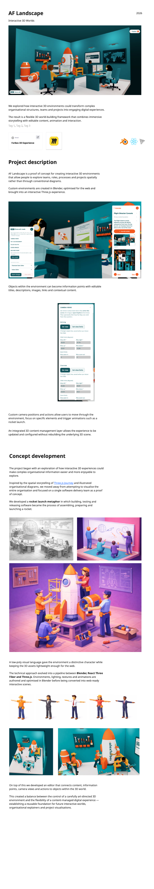

<!doctype html>
<html lang="en">
<head>
  <meta charset="utf-8">
  <meta name="viewport" content="width=device-width,initial-scale=1">
  <title>AF Gallery — Option 4: Editorial index</title>
  <link rel="stylesheet" href="styles.css?v=20261023-option4ac">
</head>
<body>
  <div class="app option4-app" id="app"></div>
  <script src="app.js"></script>
  <script>
    const app=document.querySelector('#app');
    const catalogue=[
      {...projects[1],category:'Innovation',code:'01'},
      {...projects[0],category:'Calculators',code:'02'},
      {...projects[2],category:'Platforms',code:'03'},
      {...projects[1],title:'AF Landscape — Spatial prototype',category:'Innovation',code:'04'},
      {...projects[2],title:'AF Engage — Team workspace',category:'Platforms',code:'05'},
      {...projects[0],title:'Retirement projection tools',category:'Calculators',code:'06'}
    ];
    let visible=[...catalogue],activeIndex=0;
    const card=(p,i)=>`<article class="option4-project" data-index="${i}" data-title="${p.title.toLowerCase()}" data-category="${p.category}"><button class="option4-open" type="button" aria-label="Open ${p.title}"><div class="option4-meta"><span class="option4-mark">${p.code}</span><h2>${p.title}</h2><p>${p.category}</p><span>${p.status.toUpperCase()}</span></div><div class="option4-image"><span class="option4-view">View project</span></div></button></article>`;
    app.innerHTML=`<header class="option4-header"><a href="index.html"></a><nav class="option4-disciplines" aria-label="Project categories"><button class="active" data-filter="All">All projects</button><button data-filter="Innovation">Innovation</button><button data-filter="Calculators">Calculators</button><button data-filter="Platforms">Platforms</button></nav><button class="option4-search-toggle" type="button" aria-label="Search">⌕</button></header><section class="option4-search-panel"><label class="search"><input placeholder="Search projects, keywords, or tech stack"></label></section><main class="option4-catalogue"></main><div class="option4-dialog" role="dialog" aria-modal="true" aria-hidden="true"></div>`;
    const list=app.querySelector('.option4-catalogue');
    const dialog=app.querySelector('.option4-dialog');
    const input=app.querySelector('.option4-search-panel input');
    let filter='All';
    function render(){
      const query=input.value.trim().toLowerCase();
      visible=catalogue.filter(p=>(filter==='All'||p.category===filter)&&p.title.toLowerCase().includes(query));
      list.innerHTML=visible.map(card).join('')||`<p class="option4-empty">No projects found.</p>`;
    }
    function projectDetails(p){
      if(p.type!=='land')return `<section class="option4-detail-panel"><span class="option4-mark">01</span><h2>Overview</h2><div class="tags"><span class="tag">${p.category}</span><span class="tag">${p.status}</span></div><h3><small>1.1</small> Background</h3><p>${p.desc}</p><div class="date"><span>Start and end date</span><b>${p.date}</b></div></section>`;
      return `<section class="option4-detail-panel"><span class="option4-mark">01</span><h2>Overview</h2><div class="tags"><span class="tag">Innovation</span><span class="tag">Ideation</span><span class="tag">Communication</span></div><h3><small>1.1</small> Background</h3><p>Organisational information is often presented through static diagrams, documents and presentations. AF Landscape explores a more engaging way to communicate how teams, roles, processes and projects connect.</p></section><section class="option4-detail-panel"><span class="option4-mark">02</span><h2>Goals</h2><h3><small>2.1</small> Success criteria</h3><ul class="criteria"><li>Make complex organisational information easier to understand and more enjoyable to explore.</li><li>Represent a software delivery process through a recognisable visual metaphor.</li><li>Establish a reusable foundation for future interactive worlds and project visualisations.</li></ul></section><section class="option4-detail-panel option4-delivery-panel"><span class="option4-mark">03</span><h2>Project delivery</h2><div class="delivery-tags"><span class="tag">Concept development</span><span class="tag">Design</span><span class="tag">Technical architecture</span><span class="tag">Development</span></div><h3><small>3.1</small> Phases &amp; deliverables</h3><ol class="phases"><li>Concept development <span class="phase-status">Completed</span></li><li>3D design &amp; asset creation <span class="phase-status">Completed</span></li><li>Technical architecture <span class="phase-status current">Current</span></li><li>Web development &amp; interaction <span class="phase-status current">Current</span></li><li>Content editor development <span class="phase-status proposed">Proposed</span></li></ol></section><article class="option4-detail-panel option4-detail-media"><p>A low-poly visual language gave the environment a distinctive character while keeping assets lightweight for the web.<br><br>Environments, characters, lighting, textures and animations were authored in Blender.</p><div class="process-image characters"></div><em>Reusable characters developed for the interactive environment.</em></article><article class="option4-detail-panel option4-detail-media"><p>A low-poly environment representing a software delivery team, including characters, desks, a central rocket and supporting assets prepared for web use.</p><div class="process-image environments"></div><em>The software delivery team within the interactive 3D environment.</em></article><section class="option4-detail-panel option4-resource-panel"><span class="option4-mark">04</span><h2>Resources</h2><h3><small>4.1</small> Phases &amp; deliverables</h3><div class="resource-grid"><div class="resource-card"><strong>3D Experience</strong><span>Interactive 3D environment.</span></div><div class="resource-card"><strong>Miro board</strong><span>Project planning &amp; collaboration.</span></div><div class="resource-card"><strong>Technical workflow</strong><span>Four-stage pipeline.</span></div><div class="resource-card"><strong>Concept illustration</strong><span>Narrative project artwork.</span></div><div class="resource-card"><strong>Environment assets</strong><span>3D models and assets.</span></div><div class="resource-card"><strong>Environment screenshots</strong><span>Views and control-editor.</span></div></div></section>`;
    }
    function openProject(index){
      activeIndex=index;
      const p=visible[index];if(!p)return;
      dialog.innerHTML=`<header><span>${String(index+1).padStart(2,'0')} / ${String(visible.length).padStart(2,'0')}</span><button class="option4-close" type="button">Close ×</button></header><div class="option4-dialog-body"><div class="option4-dialog-track"><div class="option4-dialog-copy">${status(p)}<h1>${p.title}</h1><p>${p.desc}</p><div class="date"><span>Start and end date</span><b>${p.date}</b></div><button class="view-btn">View</button></div><div class="option4-dialog-image"></div>${projectDetails(p)}</div></div><footer><button class="option4-prev" type="button" aria-label="Previous project"><svg viewBox="0 0 24 24" aria-hidden="true"><path d="M15.5 4.5 8 12l7.5 7.5"></path></svg><span>Previous</span></button><button class="option4-next" type="button" aria-label="Next project"><span>Next</span><svg viewBox="0 0 24 24" aria-hidden="true"><path d="m8.5 4.5 7.5 7.5-7.5 7.5"></path></svg></button></footer>`;
      dialog.classList.add('open');dialog.setAttribute('aria-hidden','false');document.body.classList.add('option4-locked');
      dialog.querySelector('.option4-close').focus();
    }
    function closeProject(){dialog.classList.remove('open');dialog.setAttribute('aria-hidden','true');document.body.classList.remove('option4-locked')}
    list.addEventListener('click',e=>{const item=e.target.closest('[data-index]');if(item)openProject(Number(item.dataset.index))});
    function moveDetails(direction){const scroller=dialog.querySelector('.option4-dialog-body');if(!scroller)return;scroller.scrollBy({left:direction*scroller.clientWidth*.82,behavior:'smooth'})}
    dialog.addEventListener('click',e=>{if(e.target.closest('.option4-close'))closeProject();if(e.target.closest('.option4-prev'))moveDetails(-1);if(e.target.closest('.option4-next'))moveDetails(1)});
    addEventListener('wheel',e=>{if(!dialog.classList.contains('open')||!dialog.contains(e.target))return;const scroller=dialog.querySelector('.option4-dialog-body');const dominant=Math.abs(e.deltaX)>Math.abs(e.deltaY)?e.deltaX:e.deltaY;const movement=dominant*(e.deltaMode===1?18:e.deltaMode===2?scroller.clientWidth:1);if(!movement)return;e.preventDefault();scroller.scrollLeft+=movement},{passive:false,capture:true});
    let dragging=false,dragStart=0,scrollStart=0;
    dialog.addEventListener('pointerdown',e=>{const scroller=e.target.closest('.option4-dialog-body');if(!scroller||e.target.closest('button'))return;dragging=true;dragStart=e.clientX;scrollStart=scroller.scrollLeft;scroller.classList.add('dragging');scroller.setPointerCapture(e.pointerId)});
    dialog.addEventListener('pointermove',e=>{if(!dragging)return;const scroller=e.target.closest('.option4-dialog-body')||dialog.querySelector('.option4-dialog-body');scroller.scrollLeft=scrollStart-(e.clientX-dragStart)});
    dialog.addEventListener('pointerup',e=>{dragging=false;dialog.querySelector('.option4-dialog-body')?.classList.remove('dragging')});
    app.querySelector('.option4-disciplines').addEventListener('click',e=>{const button=e.target.closest('[data-filter]');if(!button)return;filter=button.dataset.filter;app.querySelectorAll('[data-filter]').forEach(b=>b.classList.toggle('active',b===button));render()});
    app.querySelector('.option4-search-toggle').addEventListener('click',()=>{app.classList.toggle('searching');if(app.classList.contains('searching'))input.focus()});
    input.addEventListener('input',render);
    addEventListener('keydown',e=>{if(e.key==='Escape')closeProject();if(!dialog.classList.contains('open'))return;if(e.key==='ArrowRight')moveDetails(1);if(e.key==='ArrowLeft')moveDetails(-1)});
    render();
    const previewProject=new URLSearchParams(location.search).get('project');
    if(previewProject!==null)openProject(Math.max(0,Math.min(visible.length-1,Number(previewProject)||0)));
  </script>
</body>
</html>
